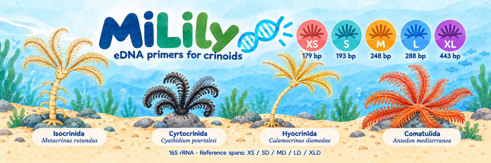
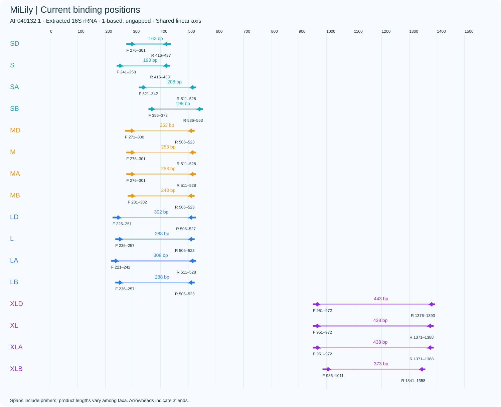
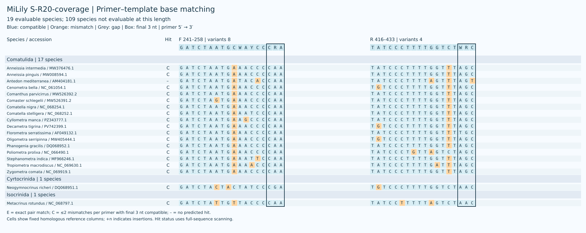
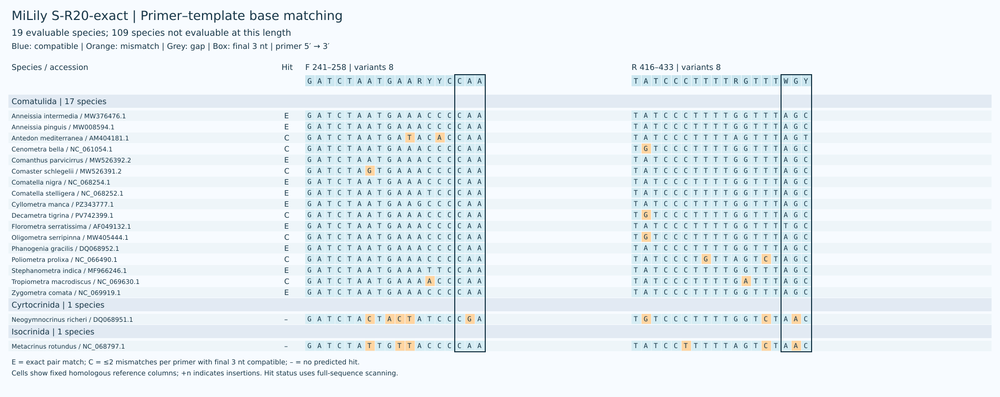
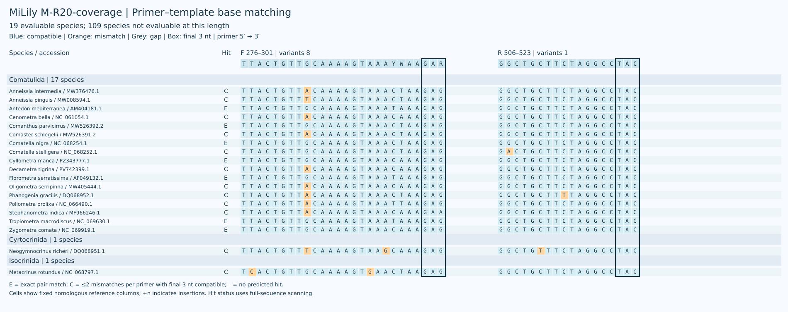
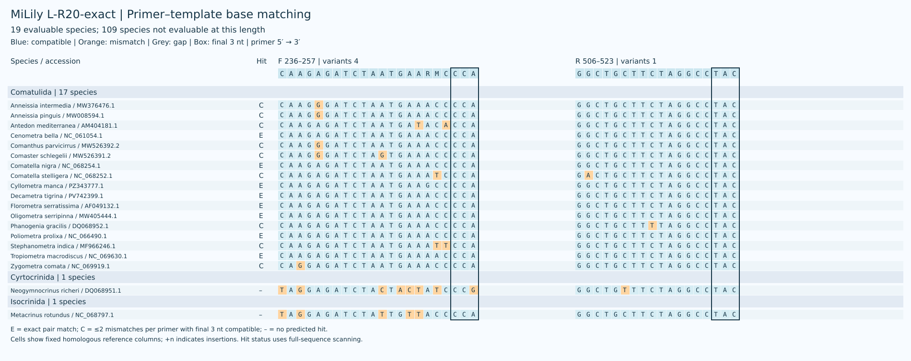
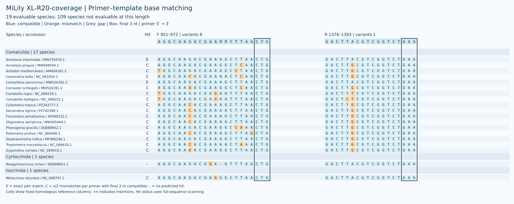

MiLily 是面向海百合类环境 DNA 的线粒体 16S rRNA 候选引物，覆盖 XS、S、M、L、XL 五个长度。每个长度保留最新筛选的单对候选；同一长度的正反向引物使用相同参考坐标。 主要指标按可评价物种等权：每个物种选一条参考序列，计算预测覆盖与完全匹配比例。参考面板包含 128 个具名物种；数据库中的物种数量不能代表各目的全球丰富度。 海百合 S–XL 各有 19 个物种可评价，其余 109 个缺少对应结合区域；XS 保持原序列并单独评价。
参考面板 / Reference panel · 分类与覆盖 / Coverage by order · 参考序列审核 / Reference curation

| Candidate | Species coverage | Exact | Strict WC / GT | WC≤3 / GT≤2 |
|---|---|---|---|---|
| S-R20-coverage | 18/19 (94.74%) | 0/19 (0.00%) | 0 / 0 | 0 / 0 |
| S-R20-exact | 17/19 (89.47%) | 10/19 (52.63%) | 0 / 5 | 0 / 10 |
| M-R20-coverage | 19/19 (100.00%) | 7/19 (36.84%) | 2 / 9 | 13 / 10 |
| L-R20-coverage | 18/19 (94.74%) | 6/19 (31.58%) | 0 / 0 | 0 / 0 |
| L-R20-exact | 17/19 (89.47%) | 8/19 (42.11%) | 0 / 0 | 0 / 0 |
| XL-R20-coverage | 18/19 (94.74%) | 2/19 (10.53%) | 0 / 3 | 4 / 3 |
预测覆盖要求每条引物最多 2 个错配且末端 3 个碱基兼容；完全匹配要求两条引物均无错配。严格 WC/GT 为上述规则下的非目标记录数；WC≤3 和 GT≤2 是不施加末端约束的宽松筛查。
新版候选每条引物简并度不超过 8，简并位点限于 3′ 半段；覆盖优先和完全匹配优先候选分别保留。指标为计算预测，需通过实验验证。
XS 为给定的原序列，其结构与非目标结果见 XS 评估，不与本轮 S–XL 的筛选结果混为一谈。
筛选结果与复核 / Screening and verification · 引物序列 / Primer sequences
| Name | F (5′→3′) | R (5′→3′) |
|---|---|---|
| XS | TTGGGGCAACCDCGAAG |
CAACATCGAGGTCGCAAAC |
| Name | F (5′→3′) | R (5′→3′) |
|---|---|---|
| S-R20-coverage | GATCTAATGCWAYCCCRA |
TATCCCTTTTGGTCTWRC |
| S-R20-exact | GATCTAATGAARYYCCAA |
TATCCCTTTTRGTTTWGY |


| Name | F (5′→3′) | R (5′→3′) |
|---|---|---|
| M-R20-coverage | TTACTGTTGCAAAAGTAAAYWAAGAR |
GGCTGCTTCTAGGCCTAC |

| Name | F (5′→3′) | R (5′→3′) |
|---|---|---|
| L-R20-coverage | CAAGAGATCTAWTGWWACCCCA |
GGCTGCTTCTAGGCCTAC |
| L-R20-exact | CAAGAGATCTAATGAARMCCCA |
GGCTGCTTCTAGGCCTAC |

| Name | F (5′→3′) | R (5′→3′) |
|---|---|---|
| XL-R20-coverage | AGGCAAGACGAARRYTTAACTG |
GACTTACGTCGGTCTGAA |
